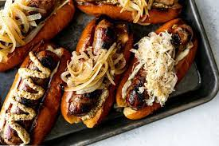

Beer Brats

Beer brats are simmered with onions in beer for extra flavor, then finished up on the grill for a crispy, charred exterior. Place them in hat dog buns(or better yet Brat buns) and top them with your favorite condiments.
Ingredients:
- 4 (12 ounce) cans of beer
- 1 large onion, thinly sliced
- 10 bratwurst
- 2 teaspoons red pepper flakes
- 1 teaspoon garlic powder
- 1 teaspoon salt
- 1/2 teaspoon ground black pepper
Directions:
- Combine beer and onion slices in a large pot: bring to a boil. Add bratwurst, pepper flakes, garlic powder, salt, and pepper. Reduce heat to medium and cook for 10 to 12 minutes.
- Meanwhile, preheat an outdoor grill for medium-high and lightly oil the grate.
- Remove bratwurst to a plate. reduce heat to low and let onions simmer until needed.
- Cook bratwurst on the preheated grill, turning occasionally to get char marks, until no longer pink in ht middle, 5 to 10 minutes. An instant-read thermometer inserted into the center should read at least 160 degrees F(70 degrees C)
- Serve the bratwurst with your favorite condiments.